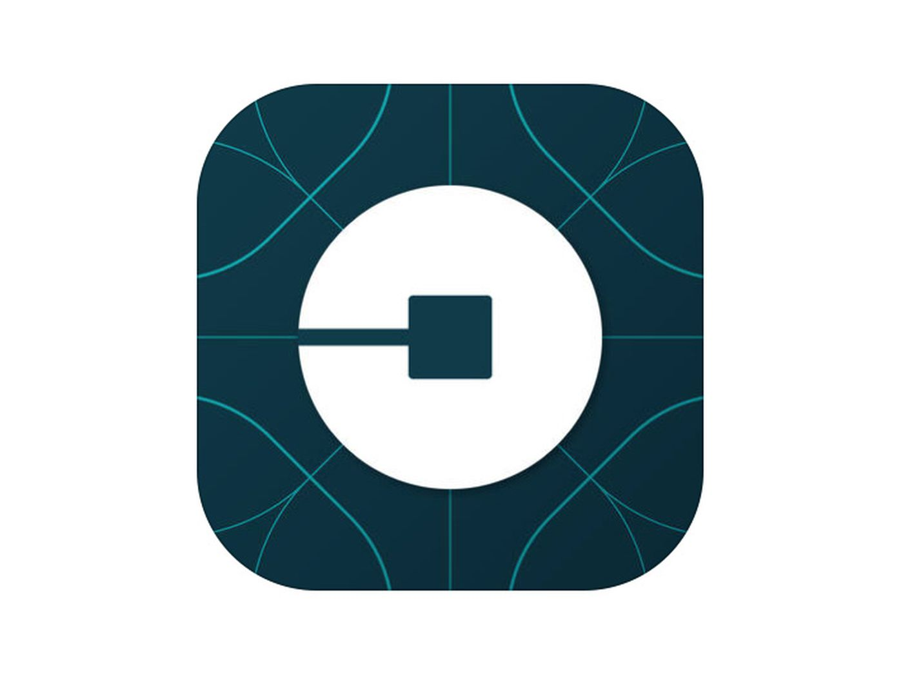
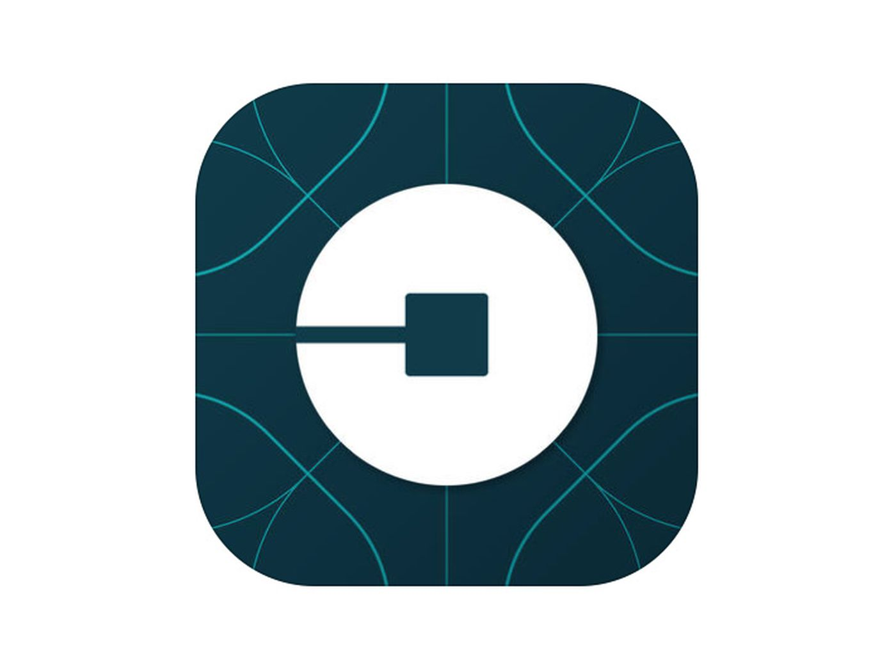
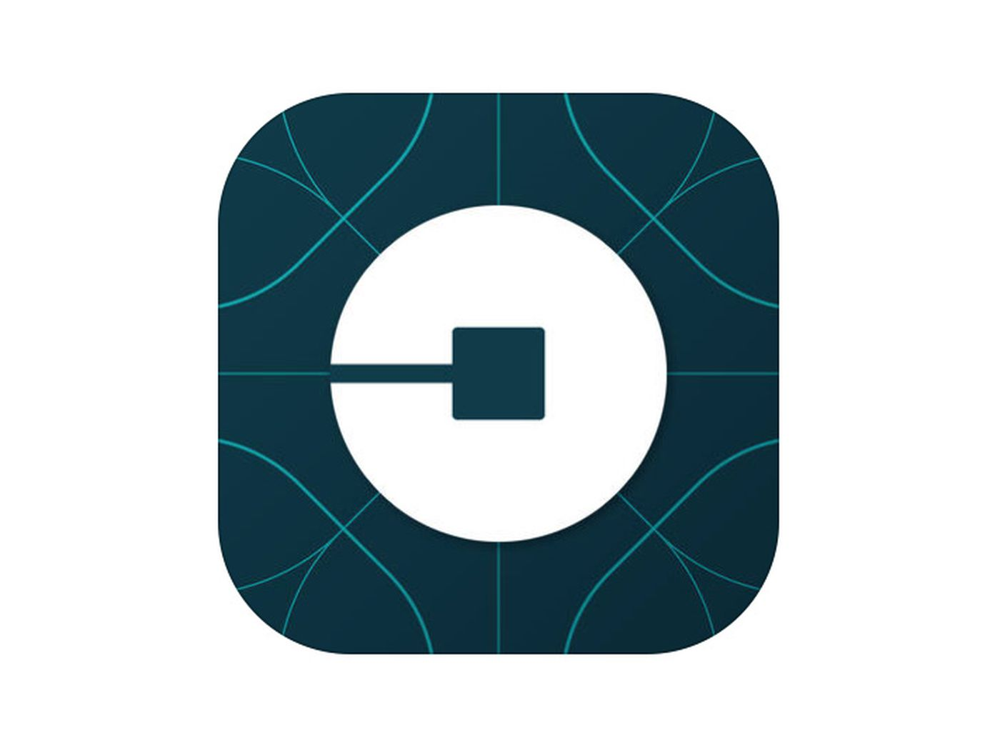

A freelance web
Designer and Developer

My graphisc design skills and expertise in photoshop plays the biggest role when doing web design. This gives a wire frame of how the actual web will look like.
After designing the web I use the wire frame to do the actual development. This is where the actual coding of the front end technologies are done.
I use tools like figma to bring out the best User experience. Here we play around with color, image firring, positioning and sizes to see what will bring out the best user exoerience. >
Because of my extensive knowldge in Java and Koltin, I extend to build android and iOS applications. Idealy, I build end to end systems for etnreprises and for startups.
My focal point is technology. I use technology to improve my hobbies and to better lives of other people. I am a huge fun of the items listed below:
Picture you have anumber of cows, in different cow sheds. This system helps you automate the very tidious accounting process of accounting and book keeping. YOu will only need to adjust the number of litres from each shade, and the possible selling price to have all the tabulations done for you in one go. This system heavily relies on a JavaScript back end, with a html and css standing on the front.
This is Anita's Kitchen. The Kitchen details the prodicts and services that are sold in Anitas restourant. This tech based solution, seeks to link Anitas Kitchen with Anita's potential clientel. If you want to have a tase of what Anita prepares, feel free to click the link and tour the site. This site is built on html and CSS.
This is a web based solution, that seeks to solve the house hunting problem. This site is designed to link up house seekers, house owners and individuals who may be in the housing indistry as a means to bring sanity in the housing chaos in Nairobi, Kenya.
This is a site that details the profile of the OLiver Mtukudzi band. It shows the band mebers, a list of their songs and the proflie history of each band meber. It is designed using html and css.
I graduated with a BSC. Information Science, having developed a keen interest in technology from an early age. I have served in several places, inludign community based volunteer programs, Tech based entrepruses as well as being part of startups starting from scratch. I have close to three years hustle experience in the tech space. Moringa School, being able to offer a multi-disciplinary learning accelerator programe,interested me because I would get digital and professional skills training, and become part of the already trained professionals in in Kenya and Rwanda. Through experienced teachers and mentors, a blended learning model, and a market and outcomes-driven curriculum, Moringa School’s mission is of transforming higher education throughout Africa will make me be confident and market fit, to be able to compete against my peers. I am intruguid by the fact that the school has placed 85% of its graduates into leading companies throughout Africa and the world.Did you know that Moringa School was named one of the ‘Top 10 Most Innovative Companies’ in 2018 by Fast Company.?
Moringa School, being able to offer a multi-disciplinary learning accelerator programe,interested me because I would get digital and professional skills training, and become part of the already trained professionals in in Kenya and Rwanda.